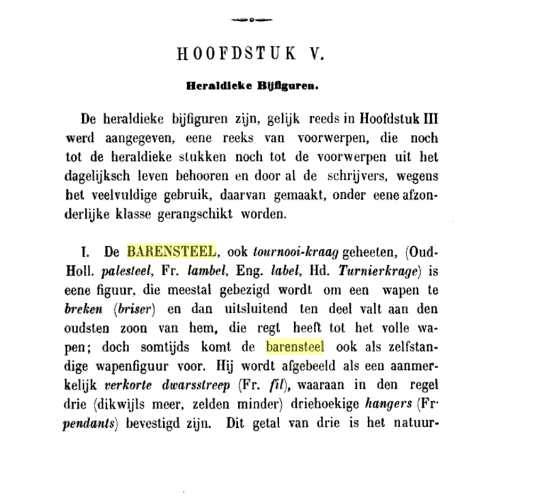
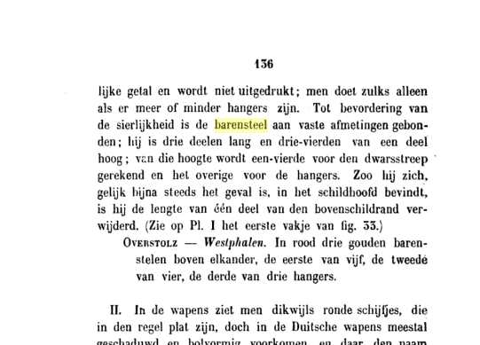
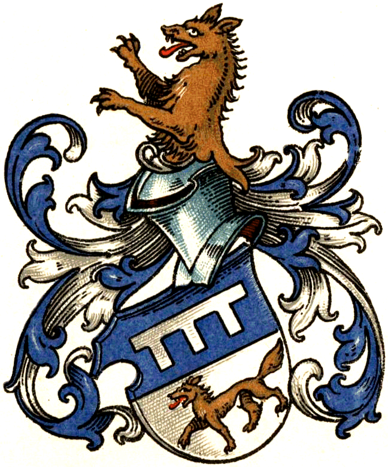
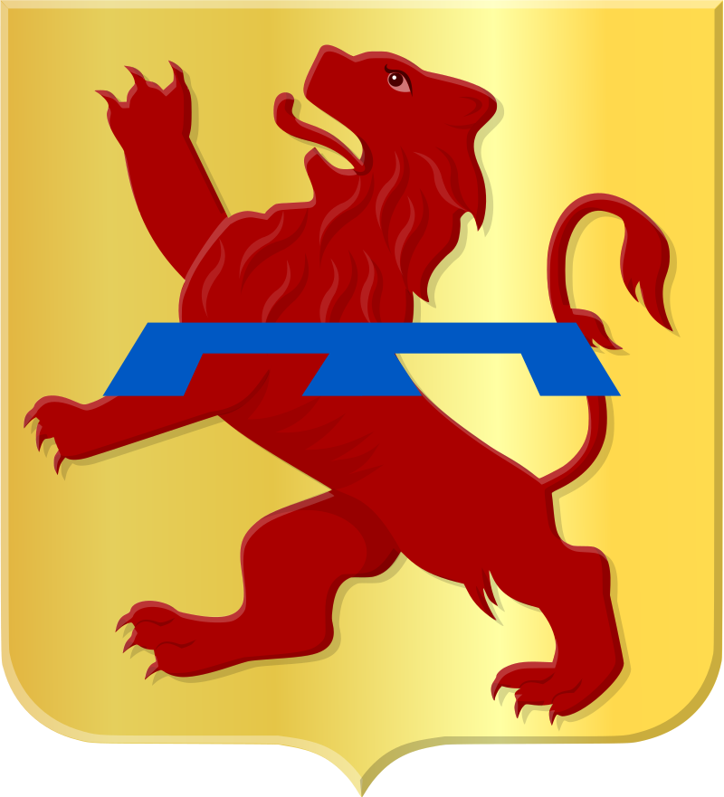

de "barensteel" in de heraldiek:
In het standaardwerk 'Handboek der Wapenkunde' van Johannes Baptista Rietstap (tweede druk 1875), Tweede Deel 'Practijk der Wapenkunde', Hoofdstuk V 'Heraldieke bijfiguren', vinden we het volgende:
 
bron: heraldica.org
Zoals in bovenvermeld Handboek der Wapenkunde van Rietstap wordt uitgelegd, werd de barensteel in de loop van de geschiedenis in bepaalde landen vooral gebruikt als breuk (brisure) om de oudste zoon aan te geven. Tegenwoordig wordt de barensteel echter ook vaak gebruikt als een op zich staande heraldische figuur.
Zoeken in het uitgebreide heraldische wapenregister van het CBG (Centrum voor Familiegeschiedenis, vroeger Centraal Bureau Genealogie) op het woord 'barensteel' geeft 476 resultaten (op de meer dan 100,000 opgenomen familiewapens).
Merk op dat in bijna alle gevallen de barensteel weergegeven is zoals beschreven in bovenstaand Handboek der Wapenkunde, namelijk verkort (de schildranden niet rakende) en met drie zwaluwstaartvormige (dovetailed) hangers.
Ook is de barensteel in bijna alle gevallen geplaatst in het schildhoofd.
https://cbgfamiliewapens.nl/zoeken?search=barensteel&collection=Familiewapens
In het on-line raadpleegbare wapenboek van de Vlaamse Heraldische Raad (VHR) bevat slechts 1 van de ongeveer 260 geregistreerde wapens van privépersonen, en 4 van de 313 gemeentewapens het woord 'barensteel' in hun beschrijving (blazoenering).
https://www.sarovlaanderen.be/wapenregister?search=barensteel
In het wapenboek van het Heraldisch College van Familiekunde Vlaanderen op 'barensteel' zoeken ('beschrijving wapen bevat trefwoord') geeft 2 resultaten (op 400 geregistreerde wapens in de databank).
http://ariadnedatabank.be/hc/hc.php
wapenbord van Regnault III de Brederode (1492-1556), ridder in de Orde van het Gulden Vlies (brevet nr 177, sinds kapittel van 1531 Doornik)
gemaakt ter gelegenheid van het kapittel van de Orde in 1559 in Gent. (vermelding 'trespassé': was overleden, sinds het vorige kapittel)

Wolff-Metternich

van Langerack